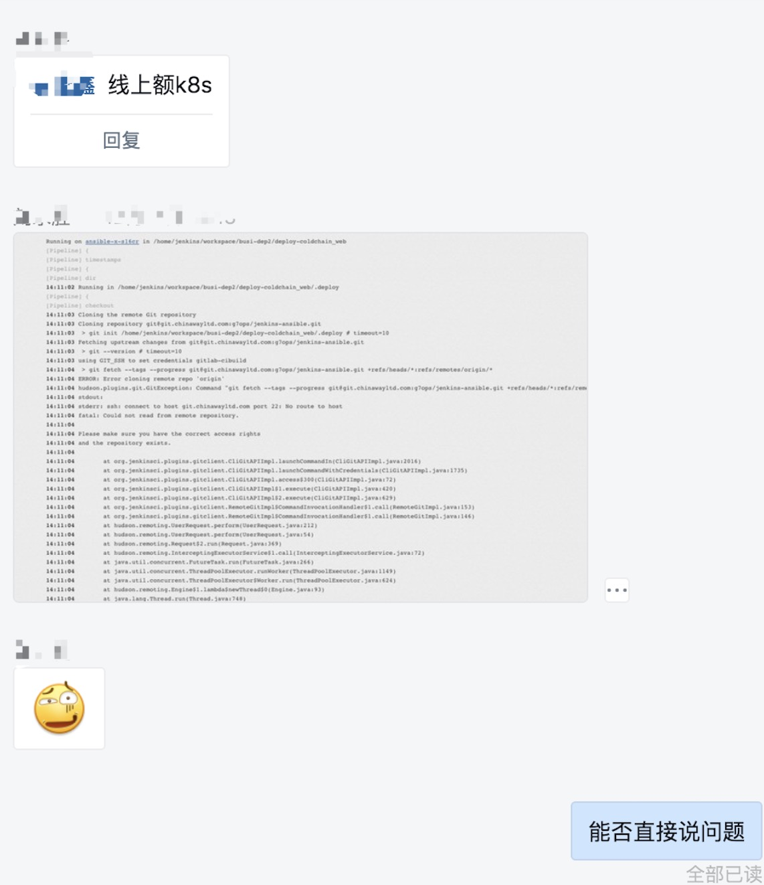
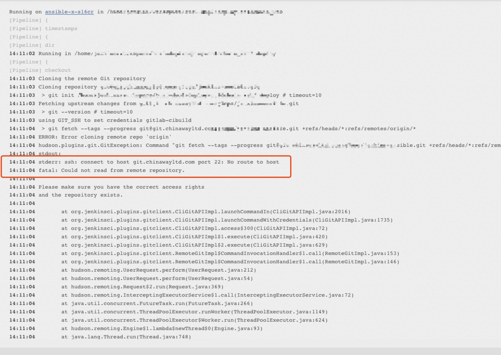

别像弱智一样提问
Stop-Ask-Questions-The-Stupid-Ways
短域名服务
- https://git.io/how-to-ask
- https://git.io/asking-question
- https://git.io/stop-stupid
你真的准备好了吗？

感谢群友
for you提供
避免 xy-problem
- 参考地址: http://xyproblem.info/
XY Problem 表示
1. 提问者想要解决 原问题 X ，且觉得解决了 引申问题 Y 就能解决 X 问题
2. ~~提问者对外提出了解决 Y 的的请求~~
3. 回答者帮助提问者解决 Y 问题。（浪费了回答者和提问者双方的时间）
然而, 最终 Y 问题可能并不是 X 问题的一个合适的解决方法
因此， 提问者要避免创造这样的修罗场, 需要学会在问题之初就准确描述自己的根本问题。 学会描述问题
提问前你必须需要知道的事情
- 要知道，
Free的正确翻译是自由，而非 ~~免费~~。 - 要知道，愿意回答问题的人，都是 可爱 的人。
- 要知道，向帮助你的人
付费是一个高尚的行为。即使回答你的人不是为了钱。 - 要知道，
花钱买时间是一个常识。如果你不能认同，要么你钱包穷，要么你思想穷。 - 要知道，给对方发工资的不是你或者你老板。
- 要知道，提问的时候你才是 孙子，帮助你的人是 大爷。
- 要知道，不回答你的问题对其他人没有任何损失。
- 要知道，
准确描述一件事情是一项基本生存技能。要学会 《提问的智慧》 - 要知道，
搜索是一项基本生存技能，学不会用 Google 的话，你可能真的不适合你所从事的行业。 - 要知道，
英文是一项基本生存技能，不认识英文的话，你可能真的不适合你所从事的行业。
幼儿园的小朋友都知道要有礼貌
请问
...问题描述...
谢谢
学会描述问题
向别人提问的时候，要学会正确的描述问题。 把对方当成你的老板，你在给他做报告。要用最精炼的文字和图片，向对方阐述明白一个事情的来龙去脉。
要知道，你不是我追的妹子，我没有时间来猜你想要什么。
记住，给别人的条件越多，你的问题解决越快。因为这不是解密游戏。
- 请问一个关于
什么的问题。 - 我想要达到
什么样效果，但是我这样做出现了什么样的问题。 - 报错日志是
这样的。（要学会画关键字） - 我尝试过
什么方法来解决。 - 我尝试搜索过了
什么关键字，在里面找到了这些 URL的回答，尝试了还是没有解决问题。 - 我用的是
什么操作系统，版本号是多少。 - 我用的是
什么软件，版本号是多少。 - 谢谢
千万别认为只有别人帮助你之后才需要说
谢谢。
学会什么时候贴图

像这种，IM 自动转义表情，贴出来的问题全是表情。
学会什么时候要圈出重点
千万不要认为别人的频率和你是同步的，然后像这样扔出一张图一个表情就了事了。
在工作中， 你@的人可能会多问一句什么情况。 但是在 IM 聊天群里面，就没有这么好运气了。

如下很难吗？
@xxx，我这边访问不了 git 仓库。
环境是: 环境是什么。

学会什么时候贴文字
什么是弱智一样的提问

萌新滚粗

| 什么鬼？ | 咋回事？ | 怎么办？ | 救命啊！！ |
|---|---|---|---|
| 自己 google | 自己 google | 自己 google | 自己 google 了吗 |